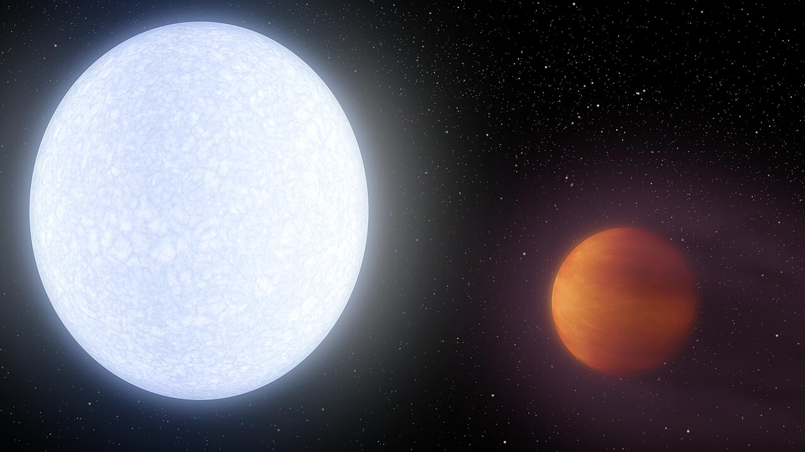

1. OGLE-2005-BLG-390Lb

OGLE-2005-BLG-390Lb (known sometimes as Hoth by NASA[1]) is a super-Earth ice exoplanet orbiting OGLE-2005-BLG-390L, a star 21,500 ± 3,300 light-years (6,600 ± 1,000 parsecs) from Earth near the center of the Milky Way, making it one of the most distant planets known. On January 25, 2006, Probing Lensing Anomalies NETwork/Robotic Telescope Network (PLANET/Robonet), Optical Gravitational Lensing Experiment (OGLE), and Microlensing Observations in Astrophysics (MOA) made a joint announcement of the discovery. The planet does not appear to meet conditions presumed necessary to support life. The PLANET team conducted close observation of the OGLE-2005-BLG-390 microlensing event over a period of about two weeks. During this series of observations, a 15% "spike" in intensity occurred, lasting approximately 12 hours. From the intensity of the increase, and its length, the PLANET astronomers were able to derive the planet's mass, and its approximate displacement from the star. the paper submitted to Nature bears the names of all members of PLANET, RoboNet, OGLE, and MOA.
Mass, radius and temperature
The planet is estimated to be about five times Earth's mass (5.5+5.5 − 2.7 M🜨). Some astronomers have speculated that it may have a rocky core like Earth, with a thin atmosphere. Its distance from the star, and the star's relatively low temperature, means that the planet's likely surface temperature is around 50 K (−220 °C; −370 °F), making it one of the coldest known. If it is a rocky world, this temperature would make it likely that the surface would be made of frozen volatiles, substances which would be liquids or gases on Earth: water, ammonia, methane and nitrogen would all be frozen solid.[3] If it is not a rocky planet, it would more closely resemble an icy gas planet like Uranus, although much smaller.
The planet is notable for its large distance from its star for such a relatively small exoplanet - these planets are challenging to find with other detection methods. Prior to this, "small" exoplanets such as Gliese 876 d, which has an orbital period of less than 2 Earth-days, were detected very close to their stars. OGLE-2005-BLG-390Lb shows a combination of size and orbit that would not make it out of place in the Solar System.[citation needed] At the time of its discovery, 160 exoplanets had been discovered and this planet replaced the 7.5 Earth mass Gliese 876 d as the lowest-mass exoplanet found orbiting a main sequence star
Host Star
PSR B1620-26 b orbits a pair of stars. The primary star, PSR B1620-26, is a pulsar, a neutron star spinning at 100 revolutions per second, with a mass of 1.34 M☉, a likely radius of around 20 kilometers (0.00003 R☉) and a likely temperature less than or equal to 300,000 K. The second is a white dwarf with a mass of 0.34 M☉, a likely radius of around 0.01 R☉, and a likely temperature less than or equal to 25,200 K. These stars orbit each other at a distance of 1 AU about once every six months. The age of the system is 12.7 to 13 billion years old, making this one of the oldest binary stars known. In comparison, the Sun has an age of 4.6 billion years.[4] The binary system's apparent magnitude, or how bright it appears from Earth's perspective, is 24. It is far too dim to be seen with the naked eye.
2. 55 Cancri Ae

55 Cancri Ae (abbreviated 55 Cnc Ae), officially named Janssen (/ˈdʒænsən/), is an exoplanet orbiting a Sun-like host star, 55 Cancri A. The mass of the exoplanet is about eight Earth masses and its diameter is about twice that of the Earth.[9] 55 Cancri Ae was discovered in data taken during 2003–2004 and announced in 2004, thus making it the first super-Earth discovered around a main sequence star, predating Gliese 876 d by a year. It is the innermost planet in its planetary system, taking less than 18 hours to complete an orbit. However, until the 2010 observations and recalculations, this planet had been thought to take about 2.8 days to orbit the star.
Due to its proximity to its star, 55 Cancri Ae is extremely hot, with temperatures on the day side exceeding 3,000 Kelvin.[7] The planet's thermal emission is observed to be variable, possibly as a result of volcanic activity.[11] It has been proposed that 55 Cancri Ae could be a carbon planet.[12] The atmosphere of 55 Cancri Ae has been extensively studied, with varying results. Initial studies suggested an atmosphere rich in hydrogen and helium,[13] but later studies failed to confirm this, instead supporting an atmosphere composed of heavier molecules,[14] possibly only a thin atmosphere of vaporized rock.[15] Most recently as of 2024, JWST observations have ruled out the rock vapor atmosphere scenario and provided evidence for a substantial atmosphere rich in carbon dioxide or carbon monoxide.[8
Mass, radius and temperature
55 Cancri Ae orbits very close to its parent star; with average orbital distance of 0.01544 ± 0.00005 AU, it takes only 18 hours to complete an orbit. Analysis of its transits reveal that its orbital inclination is about 83.6°,[9] and appears to be close to being aligned with the rotation of its parent star, with obliquity of 23 +14° −12°, favouring dynamically gentle inward migration scenarios for this planet.[5] 55 Cancri Ae may also be coplanar with the next planet in the system, 55 Cancri Ab.[22] Due to its old age and proximity to the star, the planet is extremely likely to be tidally locked, meaning that one hemisphere, referred to as dayside, permanently faces the star, while the other, the nightside, always faces away from i
55 Cancri Ae receives more radiation than Gliese 436 b, discovered in the same year.[24] The side of the planet facing its star has temperatures more than 2,000 Kelvin (approximately 1,700 degrees Celsius or 3,100 Fahrenheit), hot enough to melt iron.[25] Infrared mapping with the Spitzer Space Telescope indicated an average day-side temperature of 2,700 K (2,430 °C; 4,400 °F) and an average night-side temperature of around 1,380 K (1,110 °C; 2,020 °F).[26] Reanalysis of the Spitzer data in 2022 found a hotter day-side temperature of 3,770 K (3,500 °C; 6,330 °F) and set an upper limit of 1,650 K (1,380 °C; 2,510 °F) on the night-side temperature.
Composition
It was initially unknown whether 55 Cancri Ae was a small gas giant like Neptune or a large rocky terrestrial planet. In 2011, a transit of the planet was confirmed, allowing scientists to calculate its density. At first it was suspected to be a water planet.[21][27] As initial observations showed no hydrogen in its Lyman-alpha signature during transit,[22] Ehrenreich speculated that its volatile materials might be carbon dioxide instead of water or hydrogen.
An alternative possibility is that 55 Cancri Ae is a solid planet made of carbon-rich material rather than the oxygen-rich material that makes up the terrestrial planets in the Solar System.[28] In this case, roughly a third of the planet's mass would be carbon, much of which may be in the form of diamond as a result of the temperatures and pressures in the planet's interior. Further observations are necessary to confirm the nature of the planet.
3.PSR B1620-26 b

PSR B1620-26 b is an exoplanet located approximately 12,400 light-years from Earth in the constellation of Scorpius. It bears the unofficial nicknames "Methuselah" and "the Genesis planet" (named after the Biblical character Methuselah, who, according to the Bible, lived to be the oldest person) due to its extreme age. The planet is in a circumbinary orbit around the two stars of PSR B1620-26 (which are a pulsar (PSR B1620-26 A) and a white dwarf (WD B1620-26)) and is the first circumbinary planet ever confirmed. It is also the first planet found in a globular cluster. The planet is one of the oldest known extrasolar planets, believed to be about 12.7 billion years old
The origin of this pulsar planet is still uncertain, but it probably did not form where it is found today. Because of the decreased gravitational force when the core of star collapses to a neutron star and ejects most of its mass in a supernova explosion, it is unlikely that a planet could remain in orbit after such an event. It is more likely that the planet formed in orbit around the star that has now evolved into the white dwarf, and that the star and planet were only later captured into orbit around the neutron star.
Mass, radius and temperature
PSR B1620-26 b has a mass of 2.627 times that of Jupiter, and orbits at a distance of 23 AU (3.4 billion km), a little larger than the distance between Uranus and the Sun. Each orbit of the planet takes about 100 years.[3] The triple system is just outside the core of the globular cluster Messier 4. The age of the cluster has been estimated to be about 12.7 billion years, and because all stars in a cluster form at about the same time, and planets form together with their host stars, it is likely that PSR B1620-26 b is also about 12.7 billion years old. This is much older than most known planets discovered to date, and nearly three times as old as Earth.
Host Star
PSR B1620-26 b orbits a pair of stars. The primary star, PSR B1620-26, is a pulsar, a neutron star spinning at 100 revolutions per second, with a mass of 1.34 M☉, a likely radius of around 20 kilometers (0.00003 R☉) and a likely temperature less than or equal to 300,000 K. The second is a white dwarf with a mass of 0.34 M☉, a likely radius of around 0.01 R☉, and a likely temperature less than or equal to 25,200 K. These stars orbit each other at a distance of 1 AU about once every six months. The age of the system is 12.7 to 13 billion years old, making this one of the oldest binary stars known. In comparison, the Sun has an age of 4.6 billion years.[4] The binary system's apparent magnitude, or how bright it appears from Earth's perspective, is 24. It is far too dim to be seen with the naked eye
4. Proxima Centauri b

Proxima Centauri b is an exoplanet orbiting within the habitable zone of the red dwarf star Proxima Centauri in the constellation Centaurus. It can also be referred to as Proxima b,[7] or Alpha Centauri Cb. The host star is the closest star to the Sun, at a distance of about 4.2 light-years (1.3 parsecs) from Earth, and is part of the larger triple star system Alpha Centauri. Proxima b and Proxima d, along with the currently disputed Proxima c, are the closest known exoplanets to the Solar System.
Mass, radius and temperature
Proxima Centauri b is the closest exoplanet to Earth,[22] at a distance of about 4.2 ly (1.3 parsecs).[7] It orbits Proxima Centauri every 11.185 Earth days at a distance of about 0.048 AU,[2] over 20 times closer to Proxima Centauri than Earth is to the Sun.[23] As of 2021, it is unclear whether it has a significant eccentricity[f][26] but Proxima Centauri b is unlikely to have any obliquity.[27] The age of the planet is unknown;[28] Proxima Centauri itself may have been captured by Alpha Centauri and thus not necessarily of the same age as the latter pair of stars, which are about 5 billion years old.[21] Proxima Centauri b is unlikely to have stable orbits for moons
As of 2025, the estimated minimum mass of Proxima Centauri b is 1.055±0.055 M🜨;[2] other estimates are similar,[30] but all estimates are a minimum because the inclination of the planet's orbit is not yet known.[21] Assuming an inclination of 47°, coplanar with its host star's rotation, its true mass would be 1.44±0.21 M🜨.[2] This makes it similar to Earth, but the radius of the planet is poorly known and hard to determine—estimates based on possible composition give a range of 0.94 to 1.4 R🜨,[5][31] and its mass may border on the cutoff between Earth-type and Neptune-type planets, if that value is lower than previously estimated.[12] Depending on the composition, Proxima Centauri b could range from being a Mercury-like planet with a large core—which would require particular conditions early in the planet's history—to a very water-rich planet. Observations of the Fe–Si–Mg ratios of Proxima Centauri may allow a determination of the composition of the planet,[32] since they are expected to roughly match the ratios of any planetary bodies in the Proxima Centauri system; various observations have found Solar System-like ratios of these elements.
Host Star
Proxima Centauri b's parent star Proxima Centauri is a red dwarf,[42] radiating only 0.005% of the amount of visible light that the Sun does and an average of about 0.17% of the Sun's energy.[49] Despite this low radiation, due to its close orbit Proxima Centauri b still receives about 70% of the amount of infrared energy that the Earth receives from the Sun.[49] Proxima Centauri is also a flare star with its luminosity at times varying by a factor of 100 over a timespan of hours,[50] its luminosity averaged at 0.155±0.006
Proxima Centauri has 12.2% of the Sun's mass and 15.4% of the radius of the Sun.[51] With an effective temperature[j] of 3,050±100 Kelvin, it has a spectral type[k] of M5.5V, making it an M-type main-sequence star that is fusing hydrogen at its core to generate energy. The magnetic field of Proxima Centauri is considerably stronger than that of the Sun, with an intensity of 600±150 G;[54] it varies in a seven-year-long cycle.
5. KELT-9b

KELT-9b, also designated HD 195689 b, is an exoplanet and ultra-hot Jupiter that orbits the late B-type/early A-type star KELT-9,[6] located about 670 light-years from Earth.[6] Detected using the Kilodegree Extremely Little Telescope, the discovery of KELT-9b was announced in 2016.[2][1] As of June 2017, it is the hottest known exoplanet.
Mass, radius and temperature
KELT-9b is a relatively large giant planet at about 2.2 times the mass of Jupiter; however given that its radius is nearly twice that of Jupiter, its density is less than half that of it. Like many hot Jupiters, KELT-9b is tidally locked with its host star.[10] The outer boundary of its atmosphere nearly reaches its Roche lobe, implying that the planet is experiencing rapid atmospheric escape[11] driven by the extreme amount of radiation it receives from its host star.[10][9] In 2020, atmospheric loss rate was measured to be equal to 18 - 68 Earth masses per billion years.[12]
The planet's elemental abundances remain largely unknown as of 2022, but a low carbon-to-oxygen ratio is strongly suspected.[13] This graph shows the average temperature and mass relative to Jupiter (Mj) of known exoplanets as of 2022 As of 2022, KELT-9b is the hottest known exoplanet, with dayside temperatures approaching 4,600 K (4,327 °C; 7,820 °F) — warmer than some K-type stars.[1][6] Molecules on the day side are broken into their component atoms, so that normally sequestered refractory elements can exist as atomic species, including neutral oxygen,[14] neutral and singly ionized atomic iron[15] (Fe and Fe+) and singly ionized titanium (Ti+),[16] only to temporarily reform once they reach the cooler night side,[6] which is indirectly confirmed by measured enhanced heat transfer efficiency of 0.3 between dayside and nightside, likely driven by the latent heat of dissociation and recombination of the molecular hydrogen.[5] Surprisingly, spectra taken in 2021 have unambiguously indicated a presence of metal oxides and hydrides in the planetary atmosphere,[17] although higher resolution spectra taken in 2021 have not found any molecular emissions from the planetary dayside.
Host Star
The host star, KELT-9, also designated HD 195689, is 2.3 times larger and 2.4 times more massive than the sun. The surface temperature is 10,170 K (9,897 °C; 17,846 °F), unusually hot for a star with a transiting planet. Prior to the discovery of KELT-9b, only six A-type stars were known to have planets, of which the warmest, WASP-33, is significantly cooler at 7,430 K (7,157 °C; 12,914 °F); no B-type stars were previously known to host planets. KELT-9, classified as B9.5-A0[1][8] could be the first B-type star known to have a planet. KELT-9b occupies a circular but strongly inclined orbit a mere 0.03462 AU from KELT-9 with an orbital period of less than 1.5 days.